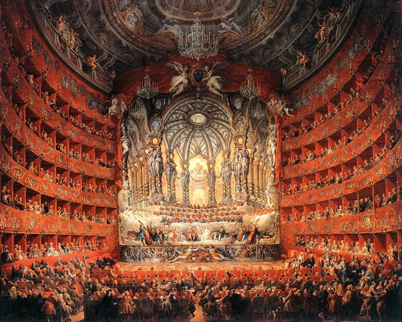
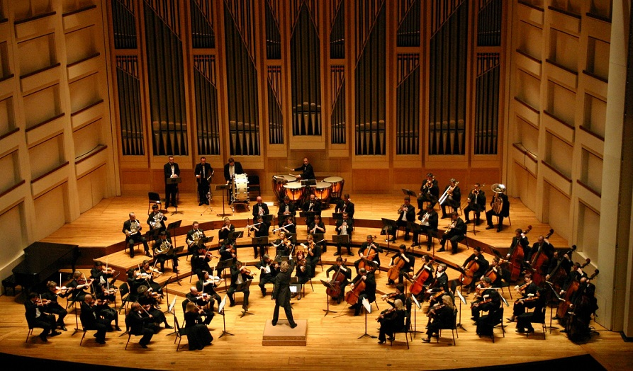
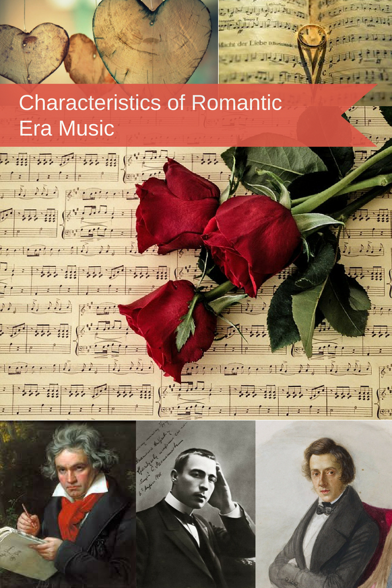
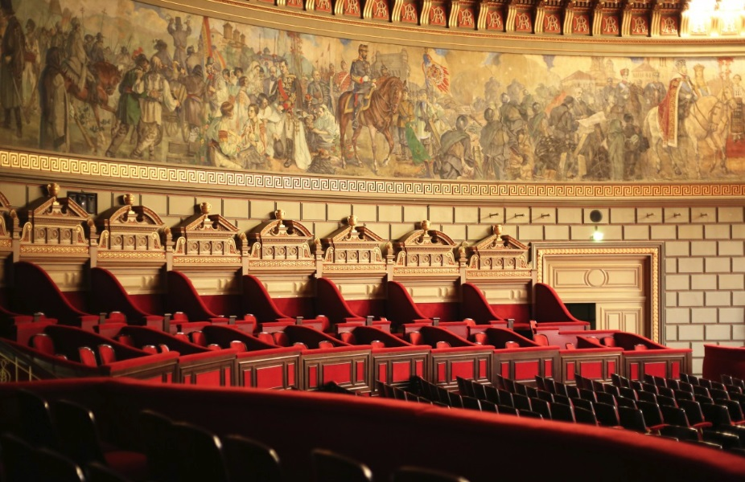

|

The Baroque Period (1600-1760)
|

Classical Period(1730-1820)
|

Romantic Era (1780 – 1880)
|

The Renaissance (1450 – 1600)
|
Influences from the west to the east merged into the pre-Christian music of the Greeks and later the Romans. Musical practices and conventions perhaps conveyed by travelling musicians brought a wealth of diversity and invention.
Surviving Greek notation from this period of musical history has given scientists and musicologists alike a vital clue to the way that the music of the time might have sounded. It certainly indicates remarkable links to the music that would follow, perhaps most notably through the use of modality in Greek music.
In the frescoes and in some written accounts, including the Bible, we have learned about the instruments that featured in the Roman and Greek times and their significance to the cultures. The trumpet as an instrument of announcement and splendid ceremony, or the lyre as an integral player in the songs of poets.
Across Europe from the early part of the first century, the monasteries and abbeys became the places where music became embedded into the lives of those devoted to God and their followers.
Christianity had established itself and with it came a new liturgy that demanded a new music. Although early Christian music had its roots in the practices and beliefs of the Hebrew people, what emerged from this was to become the basis for sacred music for centuries to come. The chants that were composed devoutly followed the sacred Latin texts in a fashion that was tightly controlled and given only to the glory of God. Music was very much subservient to the words, without flourish or frivolity.
It was Pope Gregory (540-604 AD), who is credited with moving the progress of sacred music forward and developing what is now called Gregorian Chant, characterises by the haunting sound of the open, perfect fifth.
Some controversy surrounds this claim, but the name has stuck and the music remains distinct and vitally important as it moves away from plainchant towards polyphony. This, in turn, looked back to earlier times and customs, particularly in the music of the Jewish people where the idea of a static drone commonly underpinned a second vocal line.